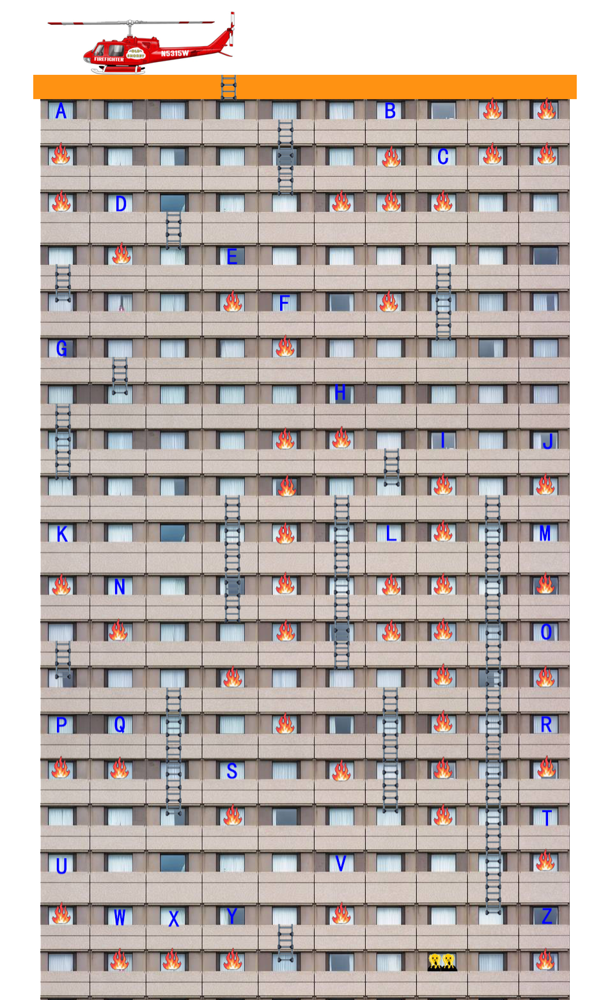

用最快速度，把被困人员救出来。千万不要进入着火的房间。注：楼道和走廊都被烟雾充斥了，好在同一层的相邻房间之间也是相通的。并且还有一些消防梯子可供在楼层间移动。还有一个坏消息是，只能使用固定的26个灭火装置，且必须到达所在位置才可启动。一台装置启动后，可以灭掉正下方房间的火。

-你难道不会冰魔法？
-过多使用魔法干预，会让人类发觉我的存在。
用最快速度，把被困人员救出来。千万不要进入着火的房间。注：楼道和走廊都被烟雾充斥了，好在同一层的相邻房间之间也是相通的。并且还有一些消防梯子可供在楼层间移动。还有一个坏消息是，只能使用固定的26个灭火装置，且必须到达所在位置才可启动。一台装置启动后，可以灭掉正下方房间的火。